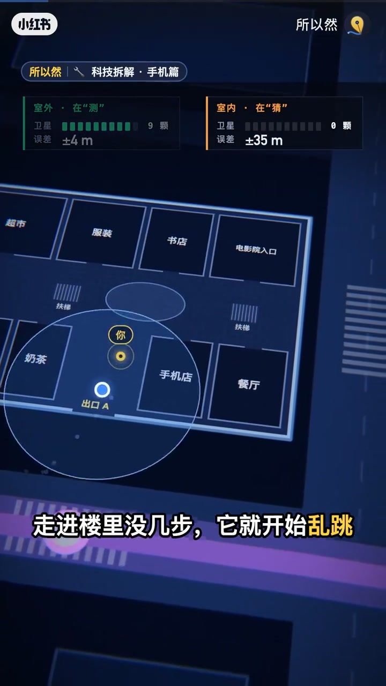
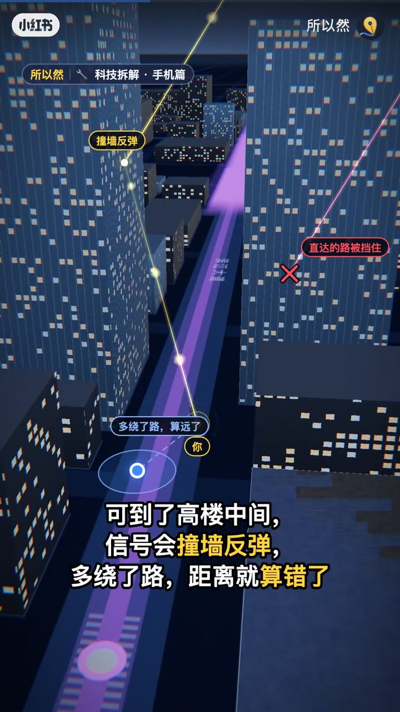
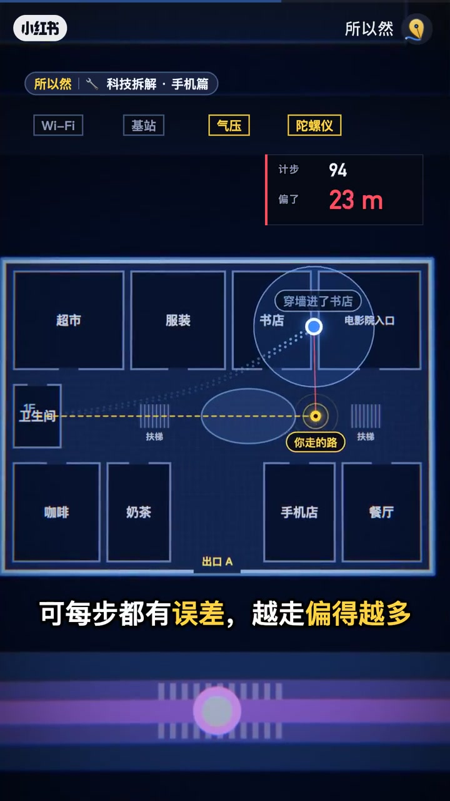
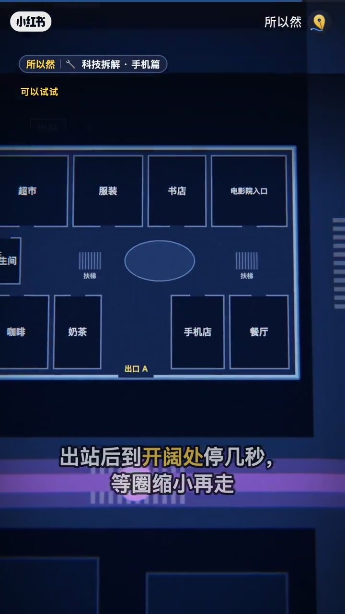

内容要点
知识结构
[00:00→00:25]
室外测 vs 室内猜
室外多星±数米；室内0星误差可到数十米，蓝点开始乱跳。
[00:25→00:55]
高楼多路径
信号撞墙反弹，路径变长，距离算错。
[00:55→01:25]
对策与真相
别关Wi-Fi；出站等圈缩小；GPS是手机自算位置。
总结
乱飘不是手机坏了，是卫星弱后的估计态；用Wi-Fi与开阔处收敛不确定度。
口播转录很少；关键数据与结论来自作者文案与片内动画标注。
图文实录
室外在测，室内在猜
00:00 – 00:25
动画对照：室外连9星误差约±4m；室内0星误差可到±35m。走进楼里没几步蓝点就开始乱跳。

[00:11]室外±4m vs 室内±35m：从测变成猜
Outdoor ±4m vs indoor ±35m: measuring becomes guessing
城市峡谷：信号绕路
00:25 – 00:55
高楼中间直达路径被挡，信号撞墙反弹，多绕了路，距离就算错——解释「飘」的几何原因。

[00:32]撞墙反弹：路径变长导致距离算错
Wall bounce: longer path makes distance wrong

[00:53]卫星弱后：Wi-Fi/基站/惯性来估
Weak satellites: Wi-Fi, cell, and inertial cues estimate location
实用建议与片尾真相
00:55 – 01:25
别关Wi-Fi；出站到开阔处停几秒，等蓝点外圈缩小再走。片尾点明：卫星不知道你在哪，GPS单向广播，位置由手机自己算。

[01:14]对策：开阔处等待不确定圈缩小
Tip: wait in the open until the uncertainty ring shrinks